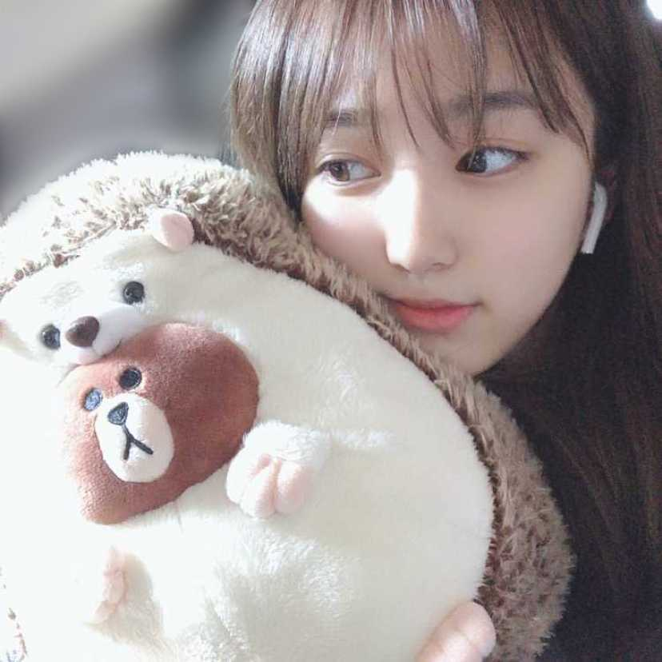

この前不思議なタクシーの運転手さんに会ったんよ😂
音楽もかかってないのに、信号待ちの時に手で足叩いてリズムとる方😂
奈子も一緒にリズムに乗ったほうがいいのか迷っちゃったよね🤔笑
あ、タクシーといえば、前に自主練終わりですっごい眠たかったときにタクシー乗って帰ったんだけど、多分奈子が道を説明しながらすっごい眠たそうにしてたんだろうね？、タクシー降りるときに、あなた心が暗いよって言われたことがあるの😂😂
いや、ただ眠たかったからぼーっとしてただけなんですーー笑笑
面白かったな😂

저번에 택시 탔는데 멈출 때마다 노래도 안 틀고 있는데 다리로 리듬 치는 사람이 있었어 ㅋㅋㅋㅋㅋㅋ
나도 같이 리듬 타야돼는 건가?? 했잖아 ㅋㅋㅋㅋㅋㅋㅋ